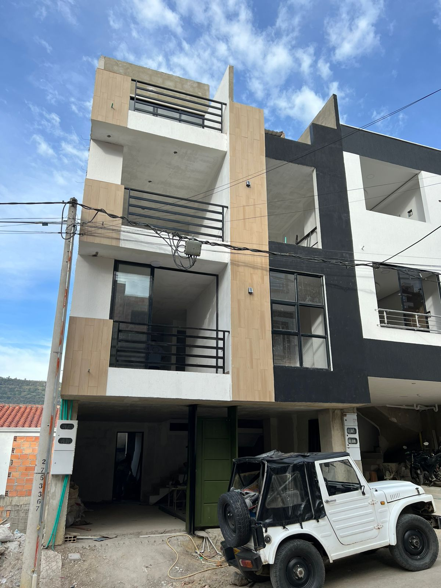
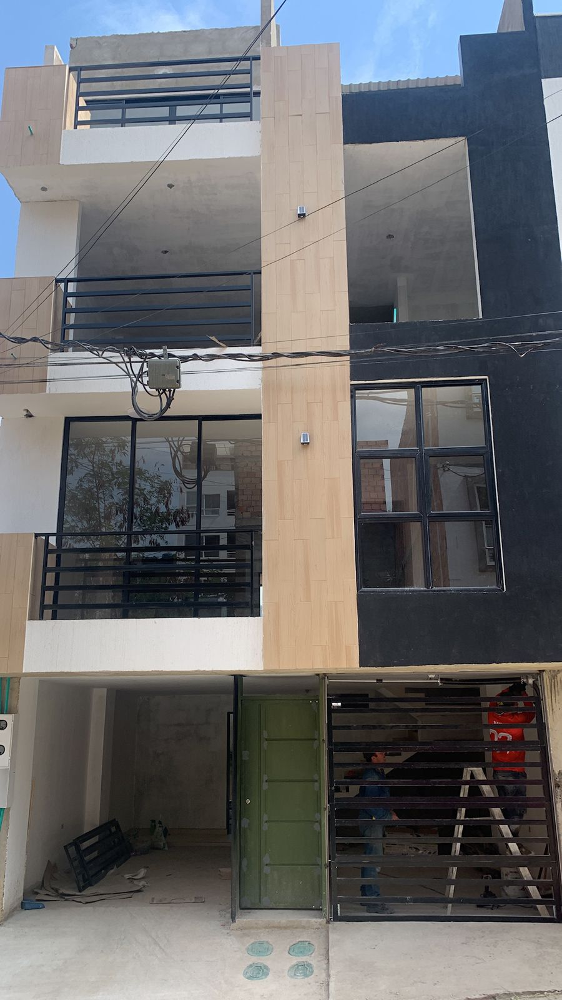
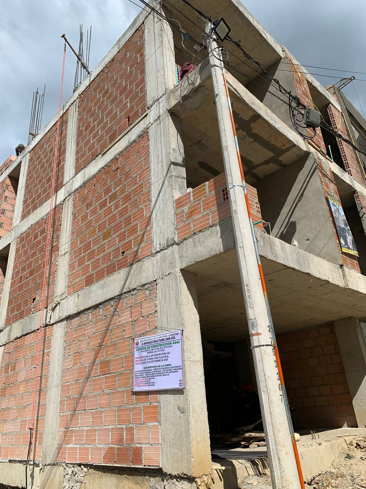
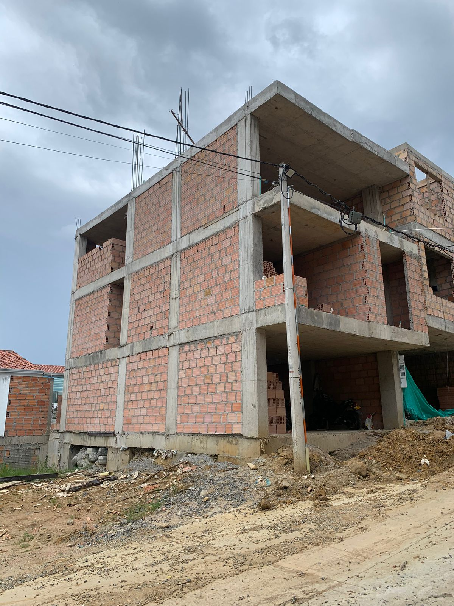
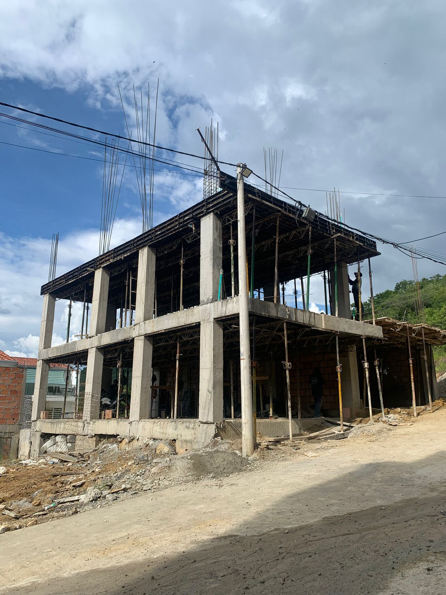
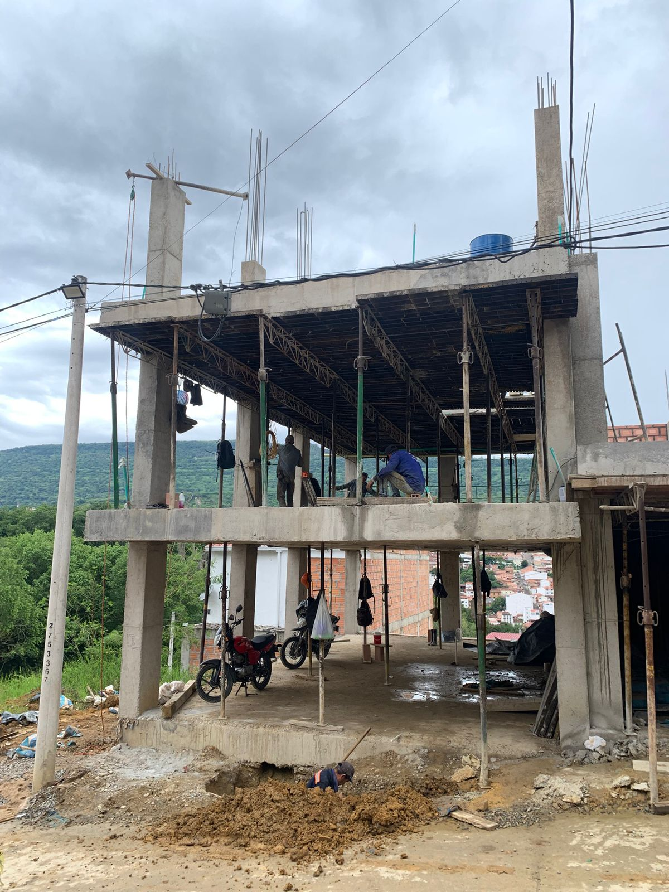
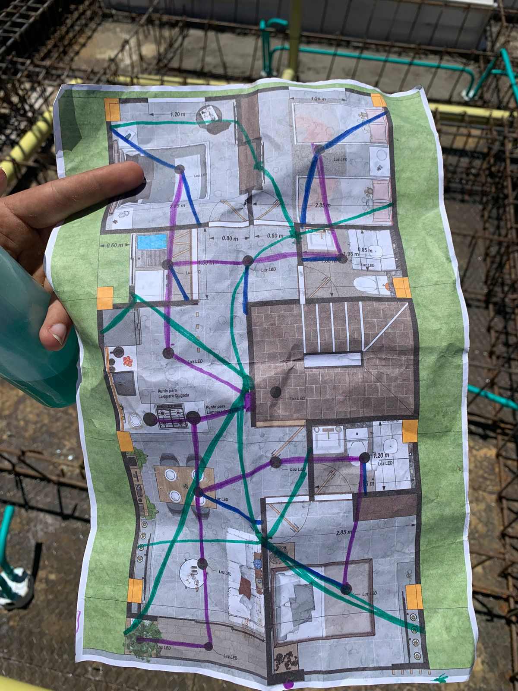
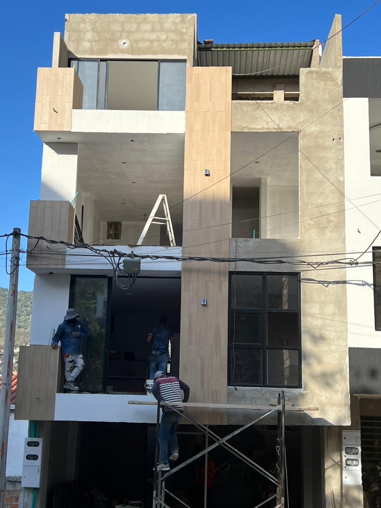
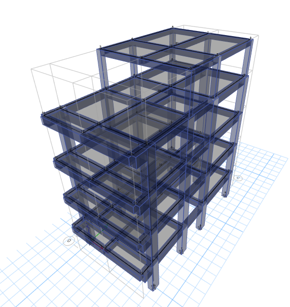

ESC-1 — Edificio multifamiliar (4 niveles) | Diseño estructural

Resumen ejecutivo
Se desarrolló el diseño estructural de un edificio multifamiliar de cuatro niveles ubicado en zona de alta amenaza sísmica. El principal reto fue garantizar estabilidad y rigidez sin apoyos intermedios, resolviendo una luz libre de 6 metros mediante pórticos resistentes a momento en concreto reforzado. El proyecto integró evaluación geotécnica del terreno por condiciones de amenaza por movimientos en masa y se diseñó conforme a los requisitos de la NSR-10. El resultado fue un sistema estructural estable, continuo y normativamente verificable, compatible con los requerimientos arquitectónicos y constructivos del proyecto.
Contexto y restricciones
- Uso: Multifamiliar
- Restricción clave: Luz libre ~6 m sin columnas
- Condición del sitio: Amenaza por movimientos en masa / geotecnia compleja
- Criterios: Derivas, resistencia, servicio, constructibilidad
Solución estructural
El sistema estructural se resolvió mediante pórticos resistentes a momento en concreto reforzado, diseñados para trabajar sin apoyos intermedios y cubrir una luz libre de 6 metros entre ejes estructurales. Los pórticos actúan como el principal sistema de resistencia lateral, garantizando continuidad de rigidez y adecuada disipación de energía sísmica. La solución permitió mantener la configuración arquitectónica requerida sin comprometer estabilidad ni desempeño estructural.
Desempeño estructural
El modelo estructural fue evaluado bajo combinaciones de carga gravitacional y sísmica conforme a la NSR-10, verificando estabilidad global, control de derivas y continuidad resistente del sistema. El diseño final cumple los requisitos de seguridad, servicio y constructibilidad establecidos para edificaciones en zonas de alta amenaza sísmica.
Galería








